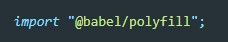
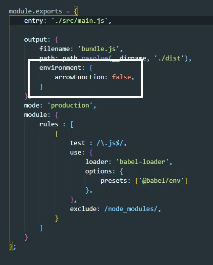

Многие проблемы решает полифилы babel, для их установки в терминале вводим команду:
npm install --save @babel/polyfillПосле того как пакеты установлены в главном файле JS перед импортами скриптов добавляем вот такую строчку:
IE не поддерживает анонимные стрелочные функции, поэтому в сборщике webPack необходимо добавить вот такой код:
Полифил с возможностью поддержки forEach можно так же импортировать с помощью npm, но это не безопасно. Нет гарантии что разработчик полифила не добавить скрипт с свой полифил который будет воровать информацию. Поэтому лучше делать так: